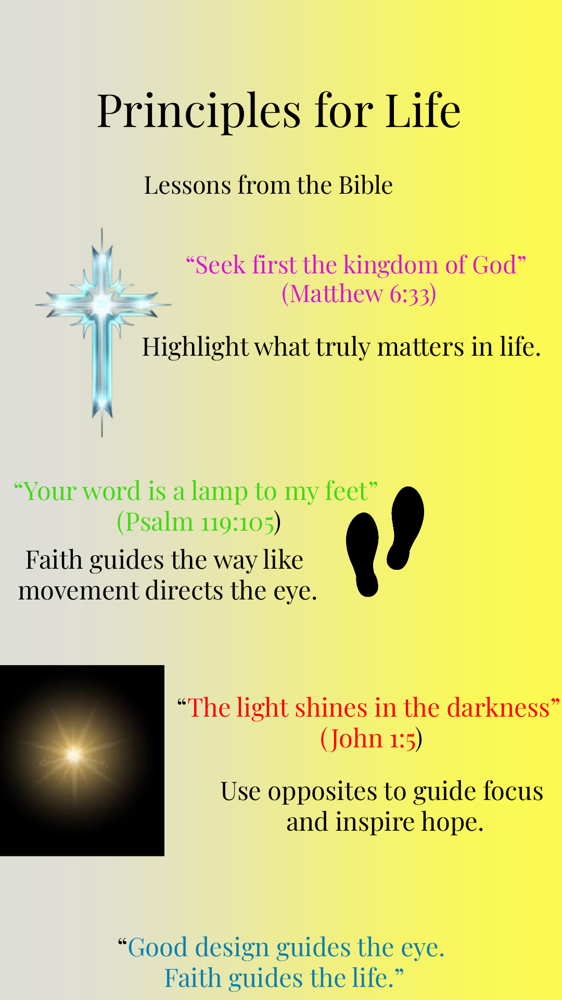

Artifacts
This section showcases the original digital artifacts I created during the course. Each artifact demonstrates my ability to apply design principles, use professional tools, and translate ideas into purposeful visual communication. Together, they represent my journey of exploration, experimentation, and refinement in graphic design.
1. House with Lines

Created using vector tools, this artifact demonstrates the use of line as a fundamental design element. It shows how simple strokes can define structure, create perspective, and establish balance in a composition. Through this exercise, I learned how lines guide the viewer's eye, convey depth, and contribute to an organized and visually appealing design.
2. Magazine Cover

Designing the Pure Glow Summer Edition cover was a creative and insightful experience. I applied principles of color, typography, and layout to create a fresh, summer-themed design that communicates the skincare message effectively. Planning the placement of text and images taught me the importance of balance and visual hierarchy, while researching trends helped me connect design choices to the target audience. This project strengthened my digital design skills and boosted my confidence in producing professional and engaging visual content.
3. Basket of Fruits

Designed with raster graphics software, this piece demonstrates color harmony and texture. The use of shading and highlights adds realism, while the arrangement of fruits shows balance and proximity.
4. Girl and House

This composition combines form and space to create a narrative scene. It demonstrates how elements can be arranged to tell a story visually, with attention to proportion and alignment.
5. Cartoon Graphic

This artifact showcases creativity through stylized illustration. Using vector tools, I created bold shapes and vibrant colors to produce a playful, engaging design.
6. Logo Design

The logo demonstrates my understanding of branding and repetition. It uses simple shapes and consistent typography to create a recognizable identity, showing how design can communicate professionalism and purpose.
7. Working with Text

This artifact focuses on typography and alignment. By experimenting with fonts, spacing, and hierarchy, I created text layouts that are visually appealing and easy to read.
8. Working with Animation

This design shows a girl with white hair, where one side of her face is calm and the other side is on fire. The fire represents strong emotions like anger and passion, while the calm side represents control. I used contrasting colours to highlight this difference and create emphasis. The animation brings the fire to life, showing how emotions can change and grow.
Reflection
This collection of artifacts represents my overall growth, creativity, and development as a graphic design student. Throughout this project, I explored a wide range of design concepts, including the elements and principles of design, colour theory, typography, and digital illustration. Each artifact demonstrates not only my ability to use design tools, but also my understanding of how visual elements can be used to communicate meaning effectively.
At the beginning of the course, I focused mainly on learning basic skills such as using lines, shapes, and simple tools to create designs. This is evident in my “House with Lines” artifact, where I used line as the main element to construct form and structure. Although simple, this piece helped me understand how important basic elements are in building strong designs. As I continued, I became more confident and began experimenting with colour, texture, and composition, as seen in the “Basket of Fruits,” where I applied shading and colour harmony to create a more realistic and balanced design.
As my skills improved, I started to think more deeply about the purpose and message behind my work. In the “Girl and House” composition, I explored how elements such as space, alignment, and proportion can be used to create a visual story. This helped me understand that graphic design is not only about appearance, but also about communication and meaning.
One of my strongest pieces is the animation design, which shows a girl with white hair and a face divided into two contrasting sides. One side is calm, while the other is on fire, representing strong emotions such as anger, passion, and inner conflict. I used contrasting colours to create emphasis and draw attention to the emotional difference between both sides. The animation adds movement, making the design more dynamic and powerful. This artifact shows my ability to combine creativity, symbolism, and technical skills to express deeper ideas through design.
Additionally, the logo and typography projects helped me understand the importance of clarity, consistency, and professionalism. I learned how design is used in real-world contexts, such as branding, where simplicity and repetition are key to creating a strong visual identity. Through these tasks, I improved my ability to organise information clearly and present it in a visually appealing way.
Overall, this portfolio reflects my journey from a beginner learning basic tools to a more confident designer who can apply design principles, think creatively, and communicate ideas visually. I have developed both my technical skills and my ability to analyse and create meaningful designs. Moving forward, I am motivated to continue improving, exploring new techniques, and creating designs that are both visually engaging and purposeful.